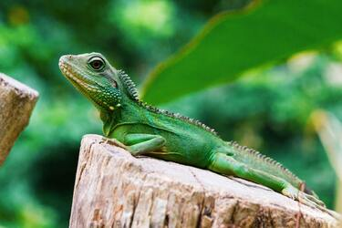
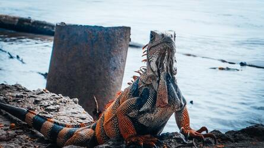
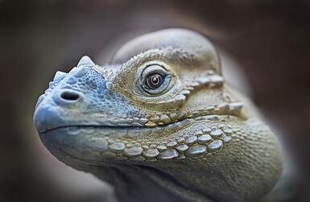
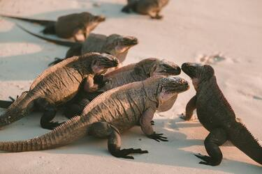

La iguana es un reptil perteneciente a la familia Iguanadiae. Su tamaño está entre los 15 cm hasta los 2 metros de largo y puede llegar a pesar unos 15 kg. Cuando están jóvenes tienen una coloración con tonos verdes y al ir madurando predomina un color grisáceo con crestas o espinas en su espalda.
La alimentación de la iguana va variando según su etapa de vida, pero la mayor parte de sus años son herbívoras. Viven en lugares tropicales con mucha vegetación y es un animal que puede ser domesticado.

CARACTERÍSTICAS
Tercer ojo
Pacíficas
Cambian de color


